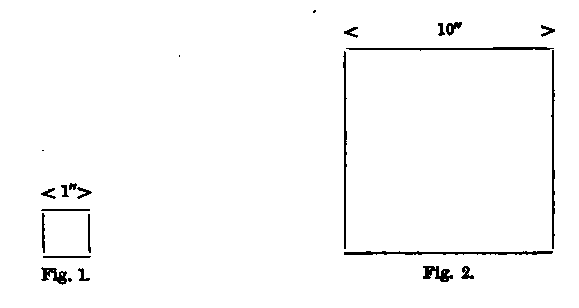

The Health Of The Individual. Part 4
Description
This section is from the book "Health", by W. H. Coefield.
The Health Of The Individual. Part 4
That ends this strange eventful history,
Is second childishness and mere oblivion,
Sans teeth, sans eyes, sans taste, sans everything."
In infancy, the first great danger is from external cold ; and why is that ? Children, you say, have a quick circulation, quick respiration, all their actions go on quickly, a large amount of oxidation goes on in their blood, a great amount of animal heat is produced; how is it then that their great danger should be from external cold? Well, the reason is extremely simple. It is because they are smalL And why is it because they are small that they are liable to danger from external cold? It is because their small bodies have large surfaces ; a small body has a larger surface, in proportion to its bulk, than a large one. If you have a lump of lead, and were told to divide it so as to make the largest amount of surface, you would not divide it into cannon-balls or large bullets; but you would divide it into the finest dust-shot, and then you would get the largest surface; what is true of a cannon-ball is equally true of a baby. Suppose we take two solid bodies, a cube of one inch, and a cube of ten inches (see Figs. 1 and 2).
Now, the side of Fig. 1 is a square inch, and there are six sides ; so that the surface of that is six square inches, and the contents one cubic inch; the surface of that cube is to the contents as 6 sq. in. to 1 cub. in.
Now, the side of Fig. 2 is 100 sq. in., and the surface of that cube is therefore 600 sq. in., while its contents are 1000 cub. in.: so that its surface is to its contents as 600 sq. in. : 1000 cub. in. = 6 sq. in.: 10 cub. in.
The surface of the small cube, then, is as 6 sq. in. : 1 cub. in., or as 60 sq. in. to 10 cub. in., and the surface of the large cube is as 6 sq. in.: 10 cub. in., so that the surface of the small one is ten times as great, in proportion to its contents, as the .surface of the large one in proportion to its contents. What is true of a cube is true of a baby.
The surface of a child, then, bears to its bulk a much larger proportion than the surface of an adult bears to his bulk. What has that to do with it ? From the surface of our body we lose heat. It is there that the perspiration is evaporated, and wherever evaporation goes on cold is caused, because heat is required for the process ; so that the body which has the largest surface is likely to lose the largest amount of heat, because a large surface means a large evaporating surface, and that means a large cooling surface ; and as a baby, by reason of its being small, has a very large surface compared with its bulk, it loses heat very fast; and so, although it is a machine which manufactures heat at greater speed than a grown-up person, still it loses heat at a much greater rate, and so the external cold is mischievous to young children, and they must not be exposed to external cold or they will die, either from being frozen to death, that is to say, by the temperature of their blood being reduced below the point which is consistent with life, or by the chill on the surface producing partial stagnation of the blood in the internal organs, with resulting disease in certain important organs, especially in the lungs : and so young children in cold weather die especially of lung disease.
The next great danger to children arises from improper feeding; they are often given foods which they cannot digest, or they are not given enough to eat. The food provided by nature for children is the only food which it is proper for them to feed upon, viz., milk, and this is the only perfect food in existence, the only food which is capable of supporting an animal without any other food ; it is through insufficient or improper nourishment that a very large number of children die, and it is one of the things of which we have most to be ashamed. There is no doubt that mothers ought to nurse their children, and it has been shown on a very large scale that the death-rate among children brought up in any other way is much greater than among children who are nursed by their own mothers. There is no doubt, therefore, that it is advantageous for the population that as many mothers as possible should nurse their own children, and I hope it will not become unfashionable in this country.
Now, the diseases that are caused to infants by giving them improper food instead of milk, starchy foods, meat, broths, and soups, which they are not a bit capable of digesting, are very many. In the first place, their digestive organs get out of order, and, if they cannot digest their food it cannot be absorbed into their system, and their blood cannot be nourished, and a large number of the wasting diseases of infants are caused or accelerated by improper food. People have not the least idea of the mischief that indigestion does us from the beginning of our lives; they say a person only suffers from indigestion; " It is only indigestion!" but if you cannot digest your food, what do you expect you can do ? Your body cannot be nourished, your brain cannot be nourished by your blood. Digestion is one of the most important things to pay attention to. So these children being fed on improper food, there digestion gets out of order and they suffer from diarrhoea, or, still worse, what is called the cholera of infants. When they so suffer, the first thing is to return to a milk diet; and if milk of an animal is to be given to them, it should be the richest possible cow's milk. I mean cow's milk with a considerable amount of cream-what is usually known and sold as nursery milk. Two parts of this should be mixed with one part of water, and sweetened with sugar. The milk diet, then, is the first thing, but some children suffering from wasting diseases of infancy cannot live upon this, they reject it; then it has been found that skim milk is far better for them. A Dutch physician a few years ago proposed that children who could not digest milk should be given butter-milk, that is to say, milk from which all the fat has been removed, but which contains all the other constituents: the practice has been very successful, and a very large number of lives have been saved by giving children in this state butter-milk.
Continue to:
- prev: The Health Of The Individual. Part 3
- Table of Contents
- next: The Health Of The Individual. Part 5